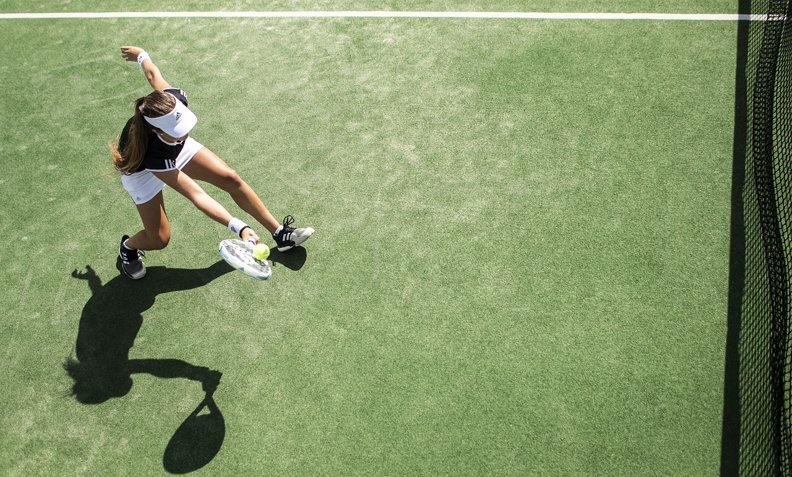

Tennis is one of the most popular sports globally, and it has a large fan base in India. Though we haven't seen a lot of success on the singles circuit, India has a long history of producing top-notch doubles players. Together, Leander Paes and Mahesh Bhupathi have won a lot of Grand Slam doubles titles.On the other hand, India's reliance on these two legends is already becoming apparent.
